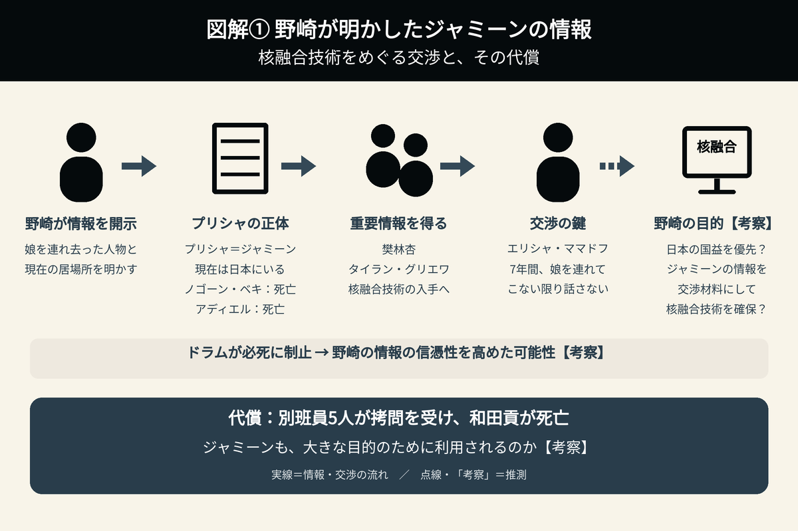
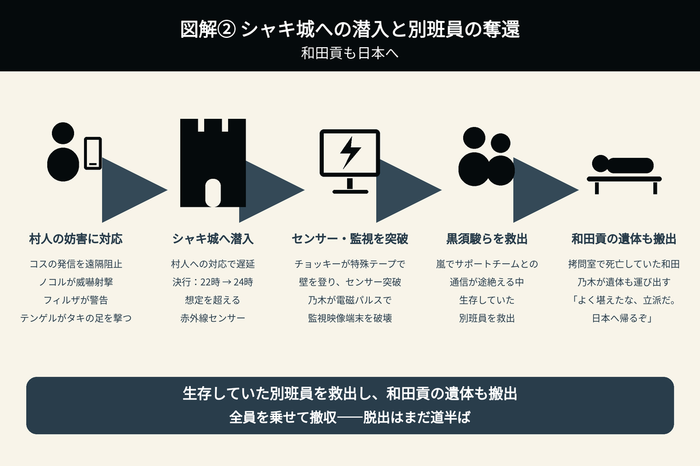
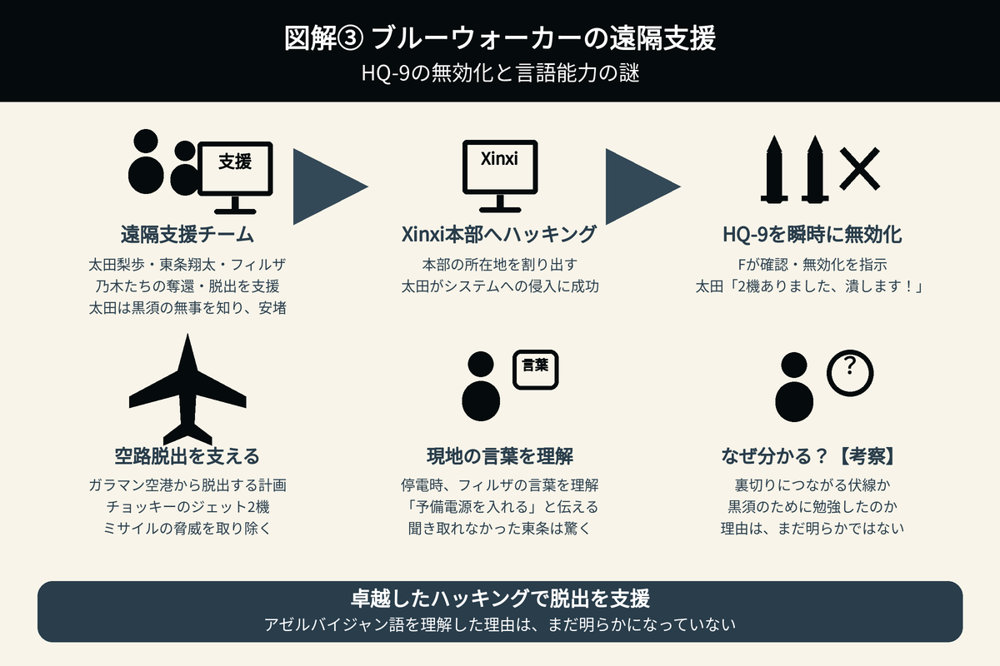

別班員奪還に成功
脱出を阻む追跡と核融合の謎
複数の人物や組織の思惑が交錯し、細かな描写を手がかりに、さまざまな考察が繰り広げられてきた『VIVANT』。
第20話では、乃木たちによる別班員の奪還作戦が進む一方、野崎は核融合技術の確保につながる重要な情報を相手に明かした。救出作戦の行方とともに、野崎の目的、ジャミーンの存在、ブルーウォーカーの能力に注目する。

1. プリシャを連れ去ったテント工作員の身元が判明――野崎がジャミーンの情報を明かした目的
乃木たちが、別班員の奪還に向けて準備を進める様子が映し出された。
ちょうどその頃、野崎とドラムがいたタイラン・グリエワの屋敷では、プリシャ・ママドフを連れ去ったテント工作員の面割り、つまり身元の特定が行われていた。
この2つの場面は、同じ時間帯に進行していることを示唆する展開となっており、野崎らの動向と乃木たちの奪還作戦が並行していたことがうかがえる。
野崎とドラムは、核融合研究者エリシャ・ママドフを囲っているブローカー、タイラン・グリエワと対面した。
野崎は、エリシャの娘・プリシャを連れ去った人物について、老いた侍がノゴーン・ベキ、若い侍がアディエルだと明かす。さらに、プリシャが現在は「ジャミーン」の名で日本にいることまで答えた。
樊林杏（ハン・リンシン）とタイラン・グリエワは、核融合技術の入手につながる極めて重要な情報を得たことになる。
ドラムの制止は、野崎の情報を裏付ける行動だったのか
劉銘軒（リュウ・ミンシュエン）も、まだ野崎の味方である可能性が残されている。
ここで注目したいのが、ドラムが必死の形相で首を振り、野崎の発言を本気で止めようとした場面だ。
そのような行動を目の前で見せられれば、野崎が明かした情報の信憑性は一気に高まる。相手は「本来なら話してはいけない秘密を、野崎が漏らしている」と受け止め、話がすぐに進むことになる。
樊林杏とタイラン・グリエワが情報の真偽を確かめる過程を省けるため、野崎が何らかの作戦を考えているのであれば、自分のペースで進めやすくなる。
野崎が情報を明かし、ドラムがそれを裏付けるような行動を取る。その結果、樊林杏とタイラン・グリエワに、情報が真実だと確信させたとも考えられる。
野崎が優先するのは、ジャミーンの保護か、核融合技術の確保か
野崎は、後の交渉材料にするため、ジャミーンの情報を明かしたのではないだろうか。
この見方に立つと、野崎が優先しているのはジャミーンの保護ではなく、核融合技術の確保ということになる。
核融合技術の真偽を確かめるために、別班員の命を危険にさらした野崎であれば、技術を手に入れるためにジャミーンの存在を交渉のテーブルに載せてもおかしくない。あくまで、日本の国益を最優先に考えた行動だと解釈できる。
しかし、そのために払われた代償は大きい。
野崎が別班員5人の情報を相手に渡した結果、彼らはひどい拷問を受け、和田貢は護り刀で殺された。
エリシャは7年間にわたり、娘を連れてこない限り核融合について話さないと言い続けてきた。タイラン・グリエワがエリシャの妻を殺してまで情報を吐かせようとしても、核融合技術についての情報は得られなかった。
ジャミーンに関する情報を渡さなければ、エリシャはこの先も口を開かないかもしれない。そうなれば、日本も核融合技術を手に入れることができない。
野崎は、その状況を踏まえてジャミーンの情報を明かしたのではないだろうか。
ジャミーンが野崎に懐かなかった理由
ジャミーンには、野崎が大きな目的のために自分を利用する可能性のある人物だと見えていたのかもしれない。だからこそ、野崎には懐かなかったのではないだろうか。
核融合技術を日本が手に入れるという大きな目的を前に、野崎は別班員をXinxi（シンシー）に差し出すなど、犠牲を厭わない行動を取ってきた。
ジャミーンは、そうした野崎の行動原理を敏感に感じ取っていたとも考えられる。
「この人は、必要になれば自分を差し出す」
そのような計算が野崎の中に存在することを、ジャミーンは見抜いていたのかもしれない。野崎に対するそっけない態度、いわゆる「塩対応」は、その可能性を示す描写として読み取れる。

2. ジャミーン拉致へ、劉銘軒が日本の工作員の指揮権を要求――野崎との共闘の可能性
ジャミーンの情報を聞いた劉銘軒（リュウ・ミンシュエン）は、彼女を拉致するため、日本にいる工作員の指揮権を樊林杏（ハン・リンシン）に求めた。
しかし、樊林杏によると、日本の工作員は別班員の家族の拉致に失敗し、別班に捕らえられている。工作員の補充には、1週間以上かかるという。
劉銘軒は、別班員の奪還作戦が近く実行される可能性を指摘した。それに対し、樊林杏は、すでに増員を手配したと説明する。
シャキ城でも、見回りの兵士が「明日から30人が応援に来る」と話す場面が描かれた。
食堂の店主・ガジモフに依頼された30人分の食事の追加は、ドラムのためではなく、増員される兵士たちのためだったことになる。
日本での工作員の補充と、シャキ城への応援部隊の到着に向けた動きからも、野崎らの動向と乃木たちの奪還作戦が並行して進んでいることがうかがえる。
一方、野崎と劉銘軒は、尋問室で密談していた。
もし、この場で劉銘軒が野崎に共闘を持ちかけていたのであれば、野崎とともにXinxiを潰し、日本へ亡命したいと考えている可能性もある。
ジャミーン拉致に向けた指揮権の要求が、樊林杏への忠誠によるものなのか、それとも別の目的を隠した行動なのか。密談の内容とともに、劉銘軒の真意が気になる。
3. 黒須駿ら別班員の奪還に成功――村人の妨害と赤外線センサーを突破
乃木の指揮のもと、ノコル率いる民間軍事会社「Y2K」の精鋭、テントのモニターである新庄浩太郎、チョッキーらが、別班員の救出作戦を展開した。
しかし、オルコ村のコスとタキが作戦への協力に反対する。村人全員に金を渡した後、村人たちは解散した。
その影響で、作戦の決行時刻は22時から24時へと遅れた。
その後、コスの携帯電話から発信が確認され、遠隔地のサポートチームが通信を阻止する。
ノコルが威嚇射撃で脅しをかけ、現地エージェントのフィルザもコスに電話し、再び同じことをすれば頭を撃つと警告した。
一方、タキは走ってシャキ城へ向かう。しかし、ノコルとともに狙撃を担当していたテンゲルがタキの足を撃ち、タキは村長の家で治療を受けることになった。
乃木たちはシャキ城への潜入に成功し、赤外線センサーが張り巡らされた地点までたどり着く。
ところが、そこには予行演習で想定していた数をはるかに上回るセンサーが設置されていた。
チョッキーは一度は尻込みするものの、壁を登るための特殊なテープを靴底に貼り、見事にセンサーを突破した。さらに乃木は、電磁パルスで監視映像の端末も破壊する。
そして、ついに別班員が囚われている牢獄までたどり着いた。
嵐の影響でサポートチームとの通信が途絶えるなど、想定外の事態に見舞われながらも、黒須駿ら、生存していた別班員の奪還に成功した。
ただし、和田貢はすでに命を落としていた。乃木たちは、生存者だけでなく、和田の遺体も連れ帰ることになる。

4. 最も過酷な尋問を受けた和田貢――乃木が遺体を連れ帰る
救出された別班員の中に、和田貢の姿だけが見当たらなかった。
和田は、奥の拷問室で磔にされたまま、命を落としていた。
乃木は和田に、「よく堪えたな、立派だ。日本へ帰るぞ」と語りかけ、その遺体も運び出した。
乃木が黒須に、和田を殺したのは誰かと尋ねると、黒須は周と李だと答えた。
全員が車に乗り込んだことを確認した乃木は、ノコルにも撤収を命じる。
このとき、ノコルは李を仕留めることはできなかった。一方、黒須を拉致した三人組の一人である佟は、頭を撃たれて死亡した。
三人組の中で、和田を刺さなかった人物が佟だった。
5. 脱出は道半ば――爆破のずれと通信妨害の不備で追っ手を振り切れず
シャキ城を脱出した乃木たちを、バイクに乗った李と、村民の車を使った3台の車両が追ってくる。
追跡を阻止するため、爆弾が仕掛けられていたのは、A・B・C地区の3か所だった。
しかし、A地区では爆破のタイミングが1.5秒ずれ、追っ手を止めることに失敗する。ブルーウォーカー・太田梨歩は、即座に修正プログラムを作成した。
B地区でも、東条翔太が爆破のボタンを押すタイミングがずれた。そのため、バイクに乗った李と、村民の車を使った車両1台が爆破を免れ、追跡を続ける。
さらに、C地区では携帯電話の電波が入ってしまうことが判明した。警視庁サイバー犯罪対策課の東条翔太は、自分のミスだと乃木に謝った。
乃木たちは追っ手を振り切れないまま、次回へ続くことになった。
第19話で託された、通信妨害と3か所の爆破
第19話では、乃木が別班のエージェントであるナティックに、携帯電話の電波妨害装置と、3か所への爆弾の設置を依頼していた。
乃木は、「この作戦、これにかかっていると言っても過言ではありません」と伝え、最敬礼でナティックを送り出した。
ナティックも、「この重要性は心している」と応じていた。
ナティックは、現地別班員の田代久美子のエージェントであり、アゼルバイジャンの書店の店主でもある。
それほど重要だと確認されていた通信妨害と爆破が、脱出の成否を左右する局面で十分に機能しなかった。この事態が、乃木たちをさらなる危機へと追い込んでいく。
6. ブルーウォーカーがHQ-9を瞬時に無効化――アゼルバイジャン語を理解した理由は？
天才的なハッキング技術を持つブルーウォーカー・太田梨歩は、警視庁サイバー犯罪対策課の東条翔太、ゴルバド共和国の現地エージェントであるフィルザとともに、乃木たちを遠隔地からサポートしていた。
太田は、密かに黒須に思いを寄せていた。任務中、黒須の無事を知って安堵する場面も描かれた。
HQ-9の無効化で、空路による脱出を支える
Xinxi（シンシー）本部の所在地が判明すると、乃木たちは本部へのハッキングを重点的に進める。
太田がその卓越した技術でシステムへの侵入に成功すると、FはHQ-9（地対空ミサイル）があるかどうかを調べ、あれば無効化するよう指示した。
太田は間髪を入れず、「2機ありました、潰します！」と答え、ミサイルを無効化した。
あまりの速さに東条らは驚き、乃木も「いいねえ！」と絶賛していた。
この対応は、第18話で説明されていた脱出計画につながっている。
バルカでの作戦会議で、乃木は、奪還作戦の後はガラマン空港からチョッキー所有のプライベートジェット2機を使い、ゴルバド共和国を脱出すると説明していた。
また、本部へのハッキングに成功した後、HQ-9を保有していることが分かれば無効化するという方針も示していた。
太田は、その計画に必要な対応を、驚くほどの速さで実行したことになる。
フィルザの言葉を理解した太田
不安定な天候の影響で、サポート拠点の電源が落ちてしまう。
フィルザは現地の言葉で、「大丈夫、予備電源を入れるから」と話した。
しかし、東条は動揺しながら「ああ～？ 鉄鋼レディは何言ってんだよ」と反応し、その言葉を聞き取れなかった。
一方、太田は「予備電源入れるって」と意味を理解して伝える。東条は驚いた表情で、太田を二度見した。
ブルーウォーカー・太田梨歩は、なぜアゼルバイジャン語を理解できるのか。
裏切りにつながる伏線なのか。それとも、黒須のためにアゼルバイジャン語を勉強したのか。その理由は、現時点では明らかになっていない。

7. Xinxi本部とシャキ城は別の場所――周の移動が示した位置関係
ブルーウォーカー・太田梨歩は、周の乗った車両がルモーの宮殿跡地に入っていくのを発見した。
乃木は、そこがXinxi（シンシー）の本部ではないかと推定する。
周が車でこの場所へ移動してきた描写から、樊林杏（ハン・リンシン）、劉銘軒、野崎、ドラムたちがいたXinxi本部と、別班員が囚われていたシャキ城は、別の場所だと分かった。
8. 次回・第21話のあらすじ――奪還を知られた乃木たちに迫る包囲網
シャキ城から仲間を救い出した乃木、ノコルらの連合チーム。しかし、敵の追っ手が通信可能なエリアに到達するのを許してしまう。
その結果、Xinxi（シンシー）のボスである樊林杏（ハン・リンシン）に、別班員が奪還されたことが伝わってしまう。
Xinxiは、乃木たちが目指すガラマン空港への道を塞ごうとする。
絶体絶命の窮地に立たされた乃木たちに、帰国への希望は残されているのだろうか。
9. 残された伏線が、さらなる謎を呼ぶ
第20話でも、まだ回収されていない伏線が残されている。
毛じいさん
野崎への情報提供に関わっていた毛じいさんについては、まだ未回収の部分が残っている。
今後、どのような形で物語に関わるのか、引き続き注目したい。
劉銘軒が乃木憂助に似すぎている理由
劉銘軒（リュウ・ミンシュエン）と乃木憂助の容姿が、あまりにもよく似ている理由は、まだ明らかになっていない。
野崎との密談や、劉銘軒が本当に味方なのかという疑問とともに、残された大きな謎の一つである。
乃木が号泣する理由
予告で描かれていた、乃木が激しく号泣する姿についても、その理由はまだ明らかになっていない。
一方、ノコルが語っていた「裏切り者は必ず現れる」という言葉については、今回の展開で回収された。
この言葉の回収と、乃木が号泣する理由は分けて整理し、今後の展開を見守りたい。
第20話で新たに分かったこと
| 項目 | 第20話で明らかになった内容 |
|---|---|
| 1. プリシャを連れ去った人物 | 野崎は、老いた侍がノゴーン・ベキ、若い侍がアディエルだと明かした。 |
| 2. プリシャとジャミーン | 野崎は、プリシャが「ジャミーン」の名で日本にいることを、樊林杏とタイラン・グリエワに伝えた。 |
| 3. 日本のXinxi工作員 | 別班員の家族の拉致に失敗し、別班に捕らえられている。補充には1週間以上かかるという。 |
| 4. シャキ城の増援 | 翌日から兵士30人が応援に来る予定であり、ガジモフへの食事の追加依頼は、その増援分だった。 |
| 5. 別班員の奪還 | 乃木たちは村人の妨害や増設された赤外線センサーを突破し、黒須駿ら、生存していた別班員の救出に成功した。 |
| 6. 和田貢の死亡 | 和田は拷問室で命を落としていた。黒須は、和田を殺した人物が周と李だと答え、乃木は和田の遺体も運び出した。 |
| 7. 佟の死亡 | 黒須を拉致した三人組の一人である佟は、頭を撃たれて死亡した。一方、李は追跡を続けている。 |
| 8. 脱出作戦の不備 | A地区では爆破のタイミングがずれ、B地区でも東条翔太が爆破のボタンを押すタイミングがずれた。C地区では携帯電話の電波が入ることが判明し、追っ手を振り切れず、脱出は完了していない。 |
| 9. 太田梨歩の能力 | 太田はHQ-9を2機発見して瞬時に無効化した。また、フィルザの話すアゼルバイジャン語を理解したが、その理由は不明である。 |
| 10. Xinxi本部の位置関係 | 太田が、周の乗った車両がルモーの宮殿跡地に入るのを発見し、乃木はそこが本部だと推定した。周の移動の描写から、Xinxi本部とシャキ城は別の場所だと分かった。 |
第20話の見どころ
第20話は、乃木たちによる別班員の奪還作戦と、野崎による核融合技術をめぐる交渉が、並行して進む回だった。
乃木たちは、オルコ村の村人による妨害、作戦時刻の遅延、想定を超える赤外線センサー、嵐による通信障害など、次々と起こる問題を乗り越え、黒須駿らの救出に成功した。
チョッキーによるセンサーの突破、乃木による電磁パルスを使った監視映像端末の破壊、ノコルやテンゲルの狙撃、フィルザの現地対応、太田と東条の遠隔支援など、それぞれの役割が作戦を支えていた点も見どころとなった。
しかし、救出の達成感だけで終わる展開ではなかった。
最も過酷な尋問を受けた和田貢は、すでに命を落としていた。乃木が和田に「日本へ帰るぞ」と語りかけ、遺体も運び出す場面には、仲間を置き去りにしないという強い思いが表れていた。
一方、野崎はジャミーンの身元と居場所を相手に明かした。
核融合技術を確保するために、どこまでの犠牲を受け入れるのか。野崎の行動を考えると、別班員だけでなく、ジャミーンの存在まで交渉材料にする可能性が浮かぶ。
ジャミーンが野崎に懐かなかった描写も、こうした行動原理を踏まえると、違った意味を持って見えてくる。ただし、野崎の真意や劉銘軒との密談の内容は、まだ明らかになっていない。
ブルーウォーカー・太田梨歩が、HQ-9を驚くほどの速さで無効化した場面も印象的だった。黒須の無事に安堵する姿に加え、アゼルバイジャン語を理解する意外な一面も描かれ、その能力と背景に新たな疑問が生まれた。
別班員の奪還には成功したものの、脱出はまだ道半ばである。
A地区での爆破のずれに続き、B地区でも東条がボタンを押すタイミングがずれ、さらにC地区では通信妨害の不備が判明した。その結果、李らの追跡を振り切ることができなかった。次回は、奪還を知った樊林杏がガラマン空港への道を塞ごうとする中、乃木たちがどのように包囲網を突破するのかが、大きな注目点となる。
さらに、毛じいさん、劉銘軒と乃木の容姿が似ている理由、乃木が号泣する理由など、未回収の伏線も残されている。
仲間を救い出した乃木たちは、和田の遺体とともに無事に帰国できるのか。野崎は核融合技術の確保に向けて何を仕掛けているのか。そして、ジャミーンをめぐる動きは、どこへ向かうのか。救出の成功と新たな危機が重なる、緊張感のある回となった。
第19話のあらすじ・伏線・考察へ
第21話（準備中）